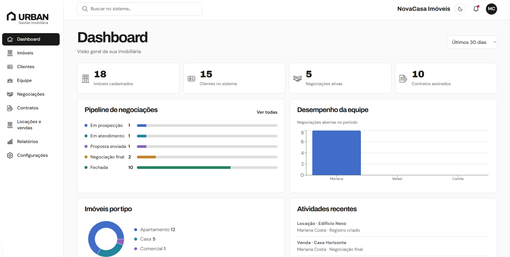
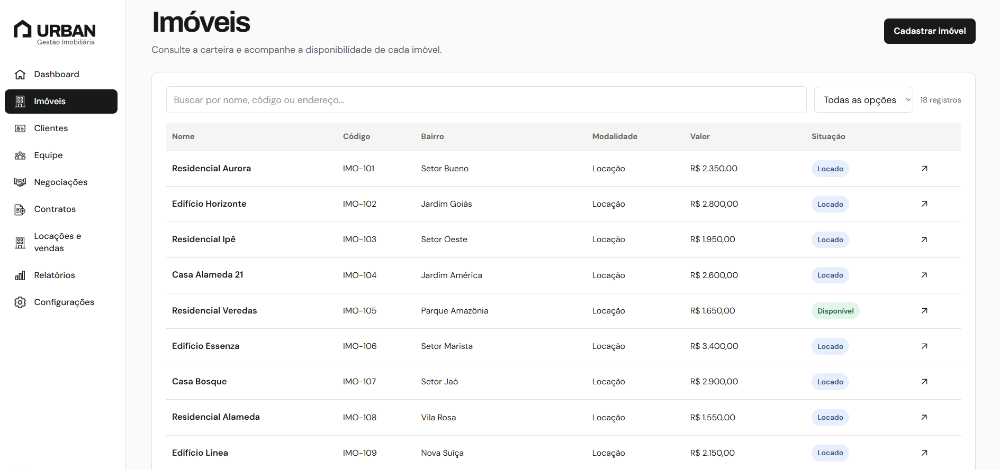
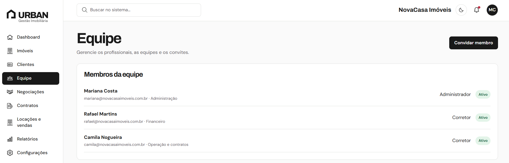
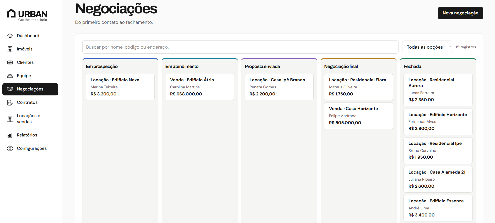

Centralizar a operação
Imóveis e contratos deveriam deixar de depender de controles fragmentados.
URBAN · Customer Success
Estruturei um case simulado de Customer Success sobre o URBAN, acompanhando uma conta desde o diagnóstico até a adoção recorrente. O trabalho conecta onboarding, marcos de sucesso, Health Score, sinais de risco e ações orientadas ao resultado do cliente.
Case simulado de portfólio cliente, interações e indicadores foram construídos para demonstrar raciocínio e práticas de Customer Success; o produto URBAN é o contexto do estudo.
Diagnóstico
A NovaCasa Imóveis representa uma conta B2B que chega ao URBAN com informações distribuídas entre planilhas, mensagens e arquivos separados. Antes de pensar em treinamento, o primeiro passo foi transformar essas dores em objetivos verificáveis.
Imóveis e contratos deveriam deixar de depender de controles fragmentados.
O URBAN precisava se tornar a principal fonte de consulta da equipe.
Mais de uma pessoa deveria conseguir localizar informações sem depender de um único responsável.
O sucesso seria medido pelo comportamento de uso, e não apenas pelo término do onboarding.
Onboarding
O onboarding foi estruturado em etapas progressivas para ativar primeiro os fluxos essenciais e evitar uma implantação centrada apenas em funcionalidades.
Contexto, responsáveis, riscos e critérios de sucesso alinhados.
Organização de usuários, imóveis, contratos e padrão de cadastro.
Fluxos prioritários colocados em uso com tarefas reais da operação.
Orientação focada nas rotinas que cada usuário precisava executar.
Acompanhamento próximo para identificar dúvidas, atritos e retorno a processos antigos.
Transição da implantação para acompanhamento por sinais de saúde e valor.
Produto em contexto
Registros de uma operação demonstrativa da NovaCasa Imóveis no URBAN. As telas ilustram os fluxos considerados no estudo; os indicadores de adoção e Health Score são simulados para fins de portfólio.

Uma visão integrada da operação para orientar reuniões de acompanhamento e identificar pontos que precisam de atenção.

Organização e consulta dos cadastros como parte do primeiro valor entregue à equipe.

Perfis e funções ajudam a planejar treinamentos contextualizados e a distribuição do conhecimento.

Um fluxo central da rotina comercial que permite discutir uso frequente, continuidade do processo e necessidades de suporte.
Health Score
O modelo combina sinais quantitativos e qualitativos. O score indica onde olhar; a decisão de CS continua dependendo do contexto da conta.
Mesmo com Health Score saudável, a manutenção da planilha financeira foi preservada como ponto de atenção. A ação foi investigar a necessidade específica antes de classificá-la como resistência ou risco de churn.
Rastreabilidade
Para evitar acompanhamento baseado em impressão, cada objetivo do cliente foi conectado a um comportamento observável e a uma ação proporcional de CS.
URBAN como fonte principal de consulta.
Equipe financeira ainda atualiza uma planilha.
O processo antigo parece mais ágil em situações pontuais.
Mapear a necessidade, orientar o fluxo e acompanhar mudança de comportamento.
Acompanhamento
Usuários-chave acessaram a plataforma e os fluxos de imóveis funcionaram sem bloqueios. Dúvidas se concentraram em contratos e o financeiro manteve a planilha paralela.
Ação: reforçar contratos e mapear uso externo.Frequência de acesso aumentou e os principais fluxos permaneceram ativos. O comportamento financeiro começou a mudar, mas ainda exigia acompanhamento.
Ação: manter orientação e validar autonomia.Consultas de contratos migraram para o URBAN, dúvidas diminuíram e a planilha financeira passou a ser atualizada com menor frequência.
Decisão: não acionar playbook de churn; transicionar para acompanhamento recorrente.Evolução da conta
A leitura final não depende de uma única métrica. Ela combina uso, autonomia, redução de controles paralelos e percepção de valor.
Informações essenciais passaram a ser consultadas no URBAN.
Conhecimento distribuído entre mais pessoas da operação.
Redução da necessidade de mensagens e arquivos separados.
Ponto de atenção financeiro monitorado sem escalada prematura.
Resultado
Na simulação, a conta evoluiu da implantação para uma situação de adoção recorrente e baixo risco. Mais importante que concluir um checklist foi verificar se o comportamento do cliente indicava que o produto estava ocupando um papel real na operação.